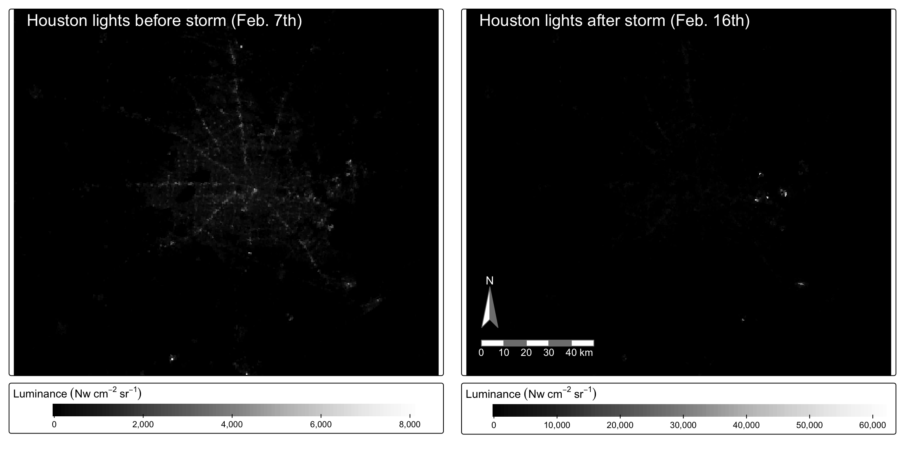
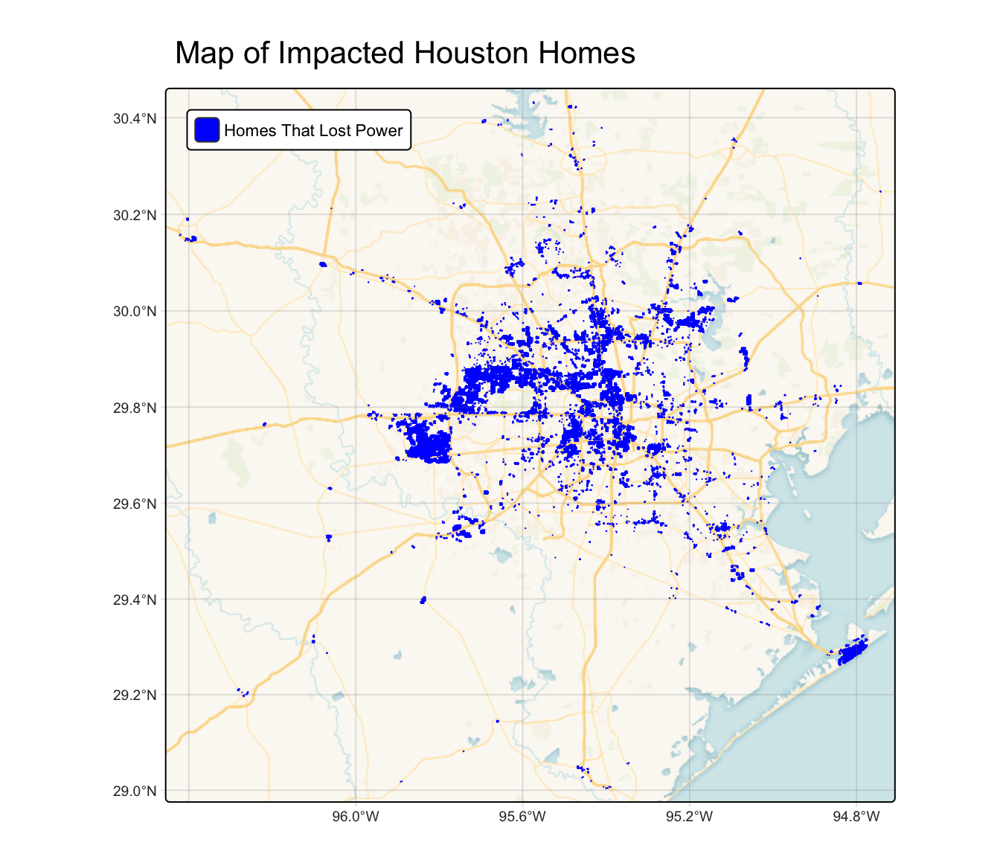
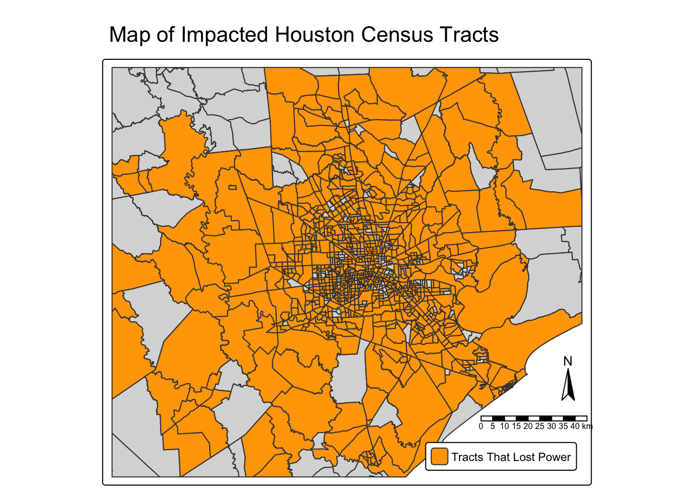
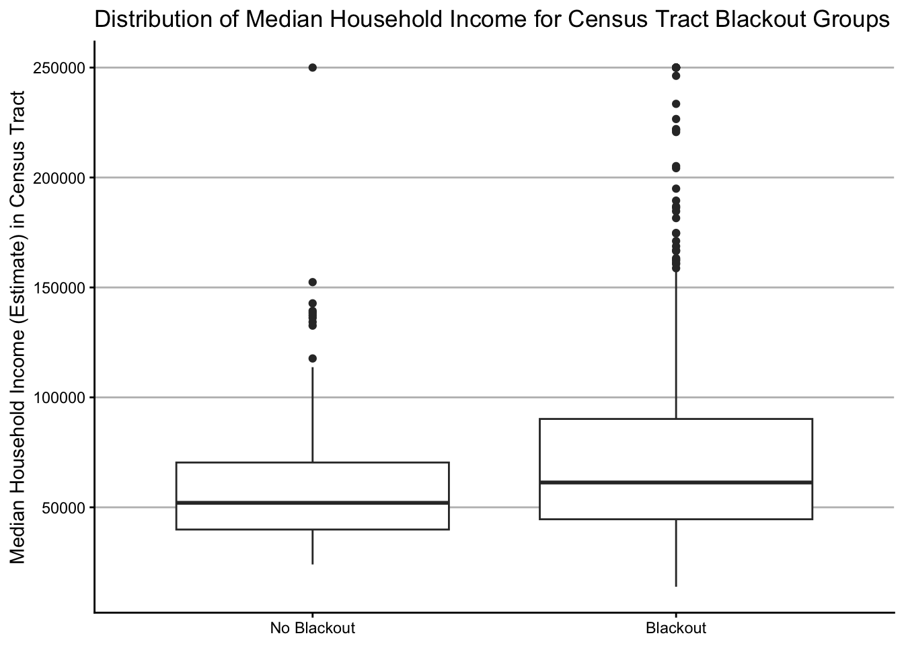

library(terra)
library(tidyverse)
library(tmap)
library(kableExtra)
library(stars)
library(maptiles)Research Question
How do severe weather events disproportionately affect disadvantaged communities?
Background
Severe weather events are increasing in frequency and intensity as antropogenic climate change worsens. In Februaray 2021, a severe winter storm swept through the United States and caused a major power crisis in Houston, Texas. Additionally, it is documented that areas in Houston with lower median household income were dispropotionately affected and experienced more blackouts. This analysis will investigate winter storm Uri and the resulting socioeconomic impacts.
Data
Night lights: Data used is from February 7th & 16th, 2021, showing the before and after of the February 2021 Texas winter storm. The Visible Infrared Imaging Radiometer Suite (VIIRS) data is from NASA’s Level-1 and Atmospheric Archive & Distribution System Distributed Active Archive Center (LAADS DAAC). The .tif files were downloaded and prepared by the instructors. LAADS DAAC Website
Roads: From Geofabrik downloads site where OpenStreetMap (OSM) data can be extracted. Geofabrik Website
Buildings: Also from Geofabrik, data contained are houses in the Houston area.
Socioeconomic: Obtained from the U.S. Census Bureau’s American Community Survey for census tracts in 2019. Used for combining census attribute data to OSM geospatial data.
Analysis
Packages used in this analysis.
Night Light Intensity Before & After the Storm
There are four night-lights data files used in this analysis. One pair of tiles is for before the storm, February 7th, 2021 and the second pair of tiles is for after the storm, February 16th, 2021. Since Houston sits on the border of two tiles, two tiles per day are needed.
# Load lights data
lights_07_1 <- read_stars(here::here('data', 'VNP46A1', 'VNP46A1.A2021038.h08v05.001.2021039064328.tif'))
lights_07_2 <- read_stars(here::here('data', 'VNP46A1', 'VNP46A1.A2021038.h08v06.001.2021039064329.tif'))
lights_16_1 <- read_stars(here::here('data', 'VNP46A1', 'VNP46A1.A2021047.h08v05.001.2021048091106.tif'))
lights_16_2 <- read_stars(here::here('data', 'VNP46A1', 'VNP46A1.A2021047.h08v06.001.2021048091105.tif'))# Merge Feb 7th rasters
lights_07 <- st_mosaic(lights_07_1, lights_07_2)
# Merge Feb 16th rasters
lights_16 <- st_mosaic(lights_16_1, lights_16_2)Before cropping to the Houston area, the Coordinate Reference Systems (CRS) of the bounding box & the night-lights rasters must match.
# Create Houston bounding box
houston_bbox <- st_bbox(c(xmin = -96.5,xmax = -94.5, ymin = 29, ymax = 30.5),
crs = "EPSG:4326")
# CRS check before cropping
if (st_crs(houston_bbox) == st_crs(lights_07)){
print("CRS Match. Ready to crop.")
} else {
warning("Converting Houston bbox to lights CRS:\n", st_crs(lights_07))
houston_bbox <- st_transform(houston_bbox, crs = st_crs(lights_07))
}[1] "CRS Match. Ready to crop."# Crop 07 raster
cropped_07 <- st_crop(lights_07, houston_bbox)
# Crop 16 raster
cropped_16 <- st_crop(lights_16, houston_bbox)Ready to plot night-lights.
Code
# Plot before & after maps
map_07 <- tm_shape(cropped_07) +
tm_raster(col.scale = tm_scale_continuous(values = '-brewer.greys'),
col.legend = tm_legend(show = TRUE,
title = expression(Luminance ~ (Nw ~ cm^{-2} ~ sr^{-1})),
orientation = 'landscape',
width = 42)) +
tm_title(text = "Houston lights before storm (Feb. 7th)",
position = c(0.03, 1),
color = "white")
map_16 <- tm_shape(cropped_16) +
tm_raster(col.scale = tm_scale_continuous(values = '-brewer.greys'),
col.legend = tm_legend(show = TRUE,
title = expression(Luminance ~ (Nw ~ cm^{-2} ~ sr^{-1})),
orientation = 'landscape')) +
tm_title(text = "Houston lights after storm (Feb. 16th)",
position = c(0.03, 1),
color = "white") +
tm_compass(position = c('left', 'bottom'),
size = 3,
text.size = 0.9,
color.dark = 'grey50',
text.color = 'white') +
tm_scalebar(position = c('left', 'bottom'),
text.size = 0.8,
color.dark = 'grey50',
text.color = 'white')
tmap_arrange(map_07, map_16, nrow = 1)
Identify Blackout Areas
To find places that had blackouts, a mask should be created that indicates whether a cell in the lights raster had a blackout or not.
- First, find the change in night-light intensity
# Get raster difference
lights_diff <- cropped_16 - cropped_07- Second, assign
NAto cells that experienced a change greater than -200 nW cm-2sr-1.
# Create houston blackout mask
lights_diff[lights_diff > -200] <- NA- Values in the raster are now only < -200, indicating a significant drop in luminosity.
- Last, the raster will need to be converted to an
sfobject for spatial operations later.
# Vectorize mask
blackout_areas <- lights_diff |>
st_as_sf() |>
st_make_valid() |>
st_transform("EPSG:3083") # Re-project to new crs
# Rename first column name
colnames(blackout_areas)[1] <- "light_difference"Exclude Highways from Blackout Areas
# Load roads data but only highways with SQL query
roads <- st_read(here::here('data', 'gis_osm_roads_free_1.gpkg'), query = "SELECT * FROM gis_osm_roads_free_1 WHERE fclass='motorway'", quiet = TRUE) |>
st_transform("EPSG:3083")Due to light pollution from highways, locations within 200 meters of highways should be excluded.
# Create 200m buffer
roads_buffer <- st_buffer(roads, dist = 200)# Combine road geometries first
roads_buffer_union <- st_union(roads_buffer)
# CRS check before finding difference
if (st_crs(blackout_areas) == st_crs(roads_buffer_union)){
print("CRS Match. Ready to find difference.")
} else {
warning("Converting blackout_areas to roads CRS:\n", st_crs(roads_buffer_union))
blackout_areas <- st_transform(blackout_areas, crs = st_crs(roads_buffer_union))
}[1] "CRS Match. Ready to find difference."# Find areas NOT within buffer
blackout_far_areas <- st_difference(blackout_areas, roads_buffer_union)Identify Homes Impacted by Blackouts
# Read homes data with SQL query
homes <- st_read(
here::here("data", "gis_osm_buildings_a_free_1.gpkg"),
query = "
SELECT * FROM gis_osm_buildings_a_free_1
WHERE (type IS NULL AND name IS NULL)
OR type IN ('residential', 'apartments', 'house', 'static_caravan', 'detached')", quiet = TRUE) |>
st_transform("EPSG:3083")# CRS check before filtering
if (st_crs(homes) == st_crs(blackout_far_areas)){
print("CRS Match. Ready to filter.")
} else {
warning("Converting homes to blackout_far_areas CRS:\n", st_crs(blackout_far_areas))
homes <- st_transform(homes, crs = st_crs(blackout_far_areas))
}[1] "CRS Match. Ready to filter."# Find homes in blackout areas
homes_blackout <- homes |>
st_filter(y = st_union(blackout_far_areas))tm_shape(homes_blackout) +
tm_polygons(col = 'blue') +
tm_basemap('CartoDB.VoyagerNoLabels') +
tm_graticules(x = seq(-96.4, -94.8, 0.4), alpha = 0.2) +
tm_add_legend(labels = c("Homes That Lost Power"),
fill = c('blue'),
type = 'polygons',
position = c('left', 'top')) +
tm_layout(bg.color = 'grey90')
# Table of homes that experienced blackouts
homes_df <- homes_blackout |>
group_by(type) |>
summarise(count = n(),
percent = round((n() / nrow(homes_blackout)) * 100, digits = 2)) |>
st_drop_geometry()
# Add total row
homes_df <- homes_df |>
add_row(type = 'Total', count = sum(homes_df$count))
# Change type NA to character string
homes_df$type[6] <- "NA"# Display kable table
options(knitr.kable.NA = "")
kbl(homes_df,
table.attr = 'class="custom-table"', # For custom html styling
col.names = c("Home Type", "Count", "Percentage (%)"),
align = 'c')| Home Type | Count | Percentage (%) |
|---|---|---|
| apartments | 1136 | 0.72 |
| detached | 353 | 0.22 |
| house | 19760 | 12.51 |
| residential | 1395 | 0.88 |
| static_caravan | 80 | 0.05 |
| NA | 135246 | 85.61 |
| Total | 157970 |
Identify Census Tracts Impacted by Blackouts
# View layers in gdb file
#st_layers(here::here('data', 'ACS_2019_5YR_TRACT_48_TEXAS.gdb'))
# Extract income layer
income <- st_read(here::here('data', 'ACS_2019_5YR_TRACT_48_TEXAS.gdb'),
layer = 'X19_INCOME', quiet = TRUE) |>
dplyr::select(c(GEOID, B19013e1, B19013m1))
# Extract census tract layer
census <- st_read(here::here('data', 'ACS_2019_5YR_TRACT_48_TEXAS.gdb'),
layer = 'ACS_2019_5YR_TRACT_48_TEXAS', quiet = TRUE) |>
dplyr::select(-c(GEOID)) |> # Drop GEOID column
rename(GEOID = GEOID_Data) |> # Rename GEOID_Data for joining
st_transform("EPSG:3083")# Find how many census tracts in houston bbox
houston_tracts_number <- census |>
st_crop(st_transform(houston_bbox, crs = "EPSG:3083")) |>
nrow()
paste0("Number of Houston census tracts: ", houston_tracts_number) [1] "Number of Houston census tracts: 1128"# Transform Houston bbox before joining
#houston_bbox <- st_transform(houston_bbox, crs = "EPSG:3083")
# CRS check before joining & cropping
if (st_crs(houston_bbox) == st_crs(census)){
print("CRS Match. Ready to find difference.")
} else {
warning("Converting houston_bbox CRS to census CRS:\n", st_crs(census))
houston_bbox <- st_transform(houston_bbox, crs = st_crs(census))
}
# Join census & income data
census_income <- left_join(x = census, y = income, by = "GEOID") |>
st_crop(houston_bbox) |>
filter(ALAND != 0) |> # Filter out ocean geometries
dplyr::select(c("GEOID", "B19013e1", "B19013m1")) |>
rename(median_hh_income_est = B19013e1,
median_hh_income_moe = B19013m1)# Filter to census tracts that lost power
census_blackouts <- census_income |>
st_filter(y = blackout_far_areas, .predicate = st_intersects) |>
mutate(blackout = TRUE) # Add blackout column
# Create blackout GEOID for filtering census_income & joining later
blackout_ids <- census_blackouts$GEOID
# Print number of census tracts that experienced blackouts
paste0("Number of Houston census tracts that experienced blackouts: ", nrow(census_blackouts))[1] "Number of Houston census tracts that experienced blackouts: 935"# Plot blackout areas with census blackouts
tm_shape(census_income) + # Census layer
tm_polygons() +
tm_shape(census_blackouts) + # Census blackout layer
tm_polygons(fill = 'orange') +
tm_compass(position = c(0.92, 0.32)) +
tm_scalebar(position = c(0.76, 0.18)) +
tm_add_legend(labels = c("Tracts That Lost Power"),
fill = c('orange'),
type = 'polygons',
position = c('right', 'bottom')) 
# Create boolean column whether tract had a blackout or not
census_blackout_tf <- census_income |>
mutate(blackout = GEOID %in% blackout_ids)
# Get value counts for blackout column
table(census_blackout_tf$blackout)
FALSE TRUE
191 935 # Median household income plot
ggplot(census_blackout_tf, aes(blackout, median_hh_income_est)) +
geom_boxplot() +
scale_x_discrete(labels = c('No Blackout', 'Blackout')) +
labs(y = "Median Household Income (Estimate) in Census Tract") +
theme_classic() +
theme(panel.grid.major.y = element_line(color = 'grey'),
axis.title.x = element_blank()) 